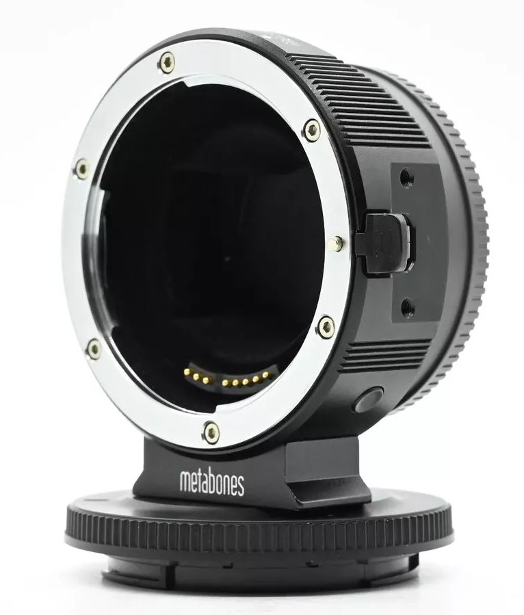
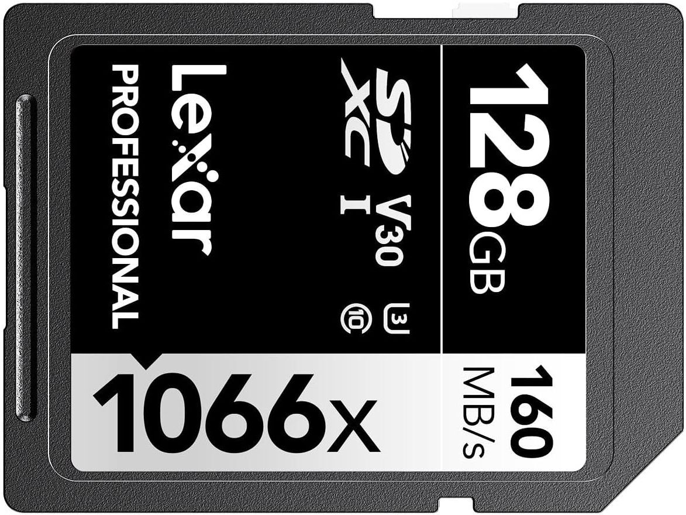

back(Sony Alpha 7 II) photomicrographyMany fanatsize that high megapixel sensors are wasted on optical microscopes,presumably supposing perfect optics with ideal MTF. Meanwhile, in the real world, deconvolution (or unsharp mask) is wanted to compensate less than ideal optics. Good unsharp masking wants 5x5 pixel arrays with 2 pixel stride, thus a good 8 megapixel image should start with at least 32 megapixel capture. Having owned Canon DSLRs and lenses since 20D, R5 or R6 would be an obvious 35mm sensor mirrorless body choice, but Sony's A7II at less than a third the cost suffices. why A7 II
why notmanualsmenumenu tutorial videosSony A7 II verdict in 2024DPReviewRelease w/o Lens:  (part of Setting up your Sony A7-ii like a dSLR) Beginner’s Guide to Manual Lenses on the Sony a7Alpha Shooters A7 II forumSony Alpha a7 II 24.3MP Mirrorless Digital Camera Body ILCE7M2/Bitem: 276586232196Condition: Used
There are a couple scuffs on the screen. No body cap. This sale includes the camera body, battery and charger pictured. Tested and fully functional. Metabones Metabones Canon EF Lens to Sony NEX Camera E Mount T Adapter Mark IVitem: 145803755239Condition: Used 
"This item is rated in Excellent condition. That means that this item is between 90-99% of original condition. This item shows little to no cosmetic blemishes and is tested as fully operational. This item includes all that is photographed in this listing and nothing more. The photographs are of the actual item for sale. The grade associated with this item reflects only the core item and not any accessories that may be included."Fully Tested and Works Properly. 6 Months Warranty included! Item pictured is the actual item for sale. See above for full description, condition, and comments.
Slim 1mm M42 Lens for Sony E-Mount NEX Adapteritem: 256451305279Condition: New
M42X0.75 Thread to 38mm Telescope Adapteritem: 175740798509Condition: New
Thread specification: T2 thread (M42X0.75mm) Thread depth: 4mm Flange distance: 2mm Outer diameter: 38mm Matting treatment: internal full barrel matting thread Clear aperture: 34mm Material: Metal - Aluminum Package: 1pcs adapter only. JJC Infrared Wireless Camera Shutter Remote Control Commander With Vlog Video Start Stop Function
Lexar 128GB Professional 1066x SDXC Memory Card, UHS-I

| |||||||||||||||||||||||||||||||||||||
| maintained by blekenbleu |